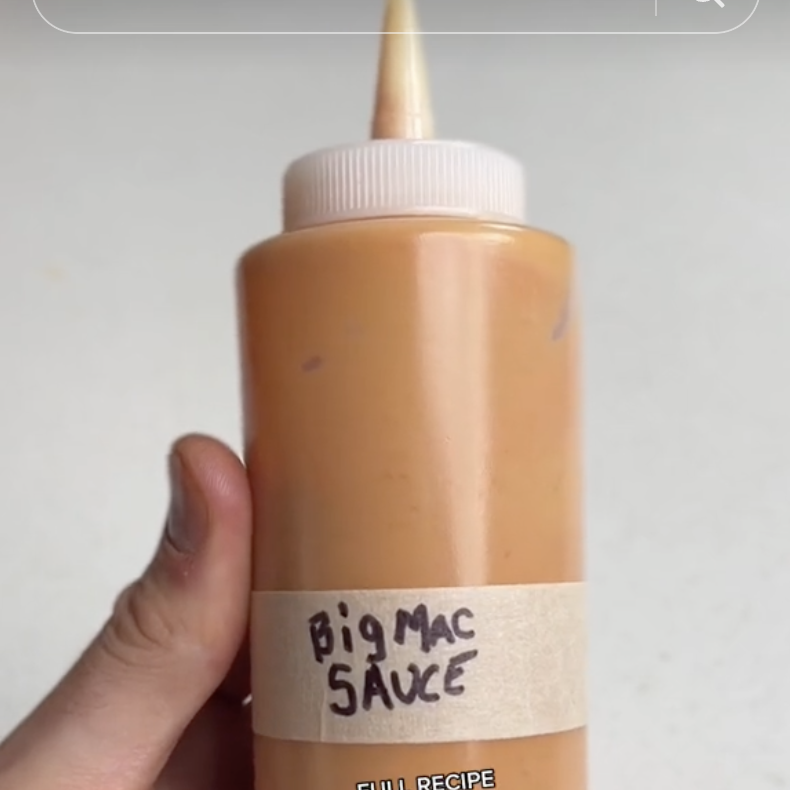

Big Mac Sauce
Ingredientes:
- 1/2 taza (120g) de Miracle Whip light (o mayonesa light, aunque agregará unas calorías adicionales)
- 3 cucharadas (42g) de ketchup sin azúcar
- 1 cucharada (14g) de mostaza
- 2 cucharadas (25g) de relish de eneldo
- 1 cucharada (14g) de vinagre blanco
- 1/2 cucharadita de cebolla en polvo
- 1/2 cucharadita de sal de ajo
- 1/4 cucharadita de paprika
Instrucciones:
- Mezclar ingredientes hasta obtener consistencia deseada